教你一步一步用c语言实现sift算法、上
参考：Rob Hess维护的sift 库
环境：windows xp+vc6.0
条件：c语言实现。
引言：
在我写的关于sift算法的前倆篇文章里头，已经对sift算法有了初步的介绍：九、图像特征提取与匹配之SIFT算法，而后在：九（续）、sift算法的编译与实现里，我也简单记录下了如何利用opencv，gsl等库编译运行sift程序。
但据一朋友表示，是否能用c语言实现sift算法，同时，尽量不用到opencv，gsl等第三方库之类的东西。而且，Rob Hess维护的sift 库，也不好懂，有的人根本搞不懂是怎么一回事。
那么本文，就教你如何利用c语言一步一步实现sift算法，同时，你也就能真正明白sift算法到底是怎么一回事了。
ok，先看一下，本程序最终运行的效果图，sift 算法分为五个步骤（下文详述），对应以下第二~第六幅图：
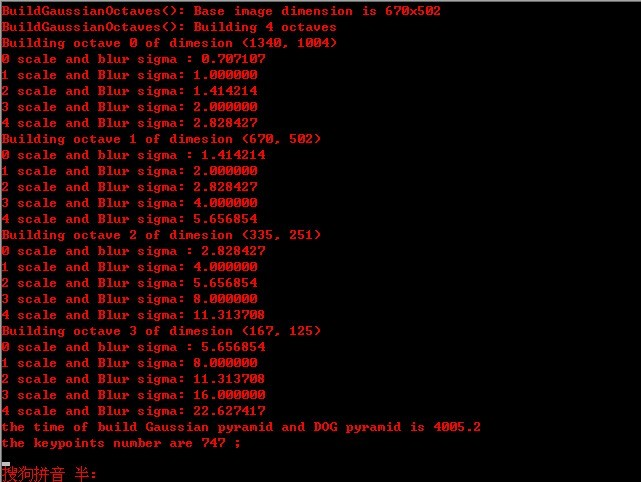
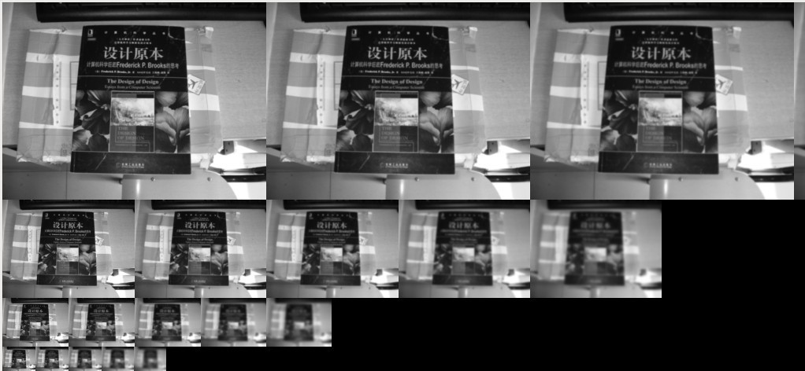
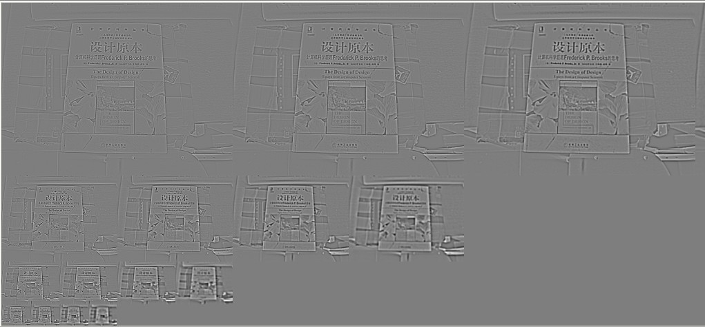
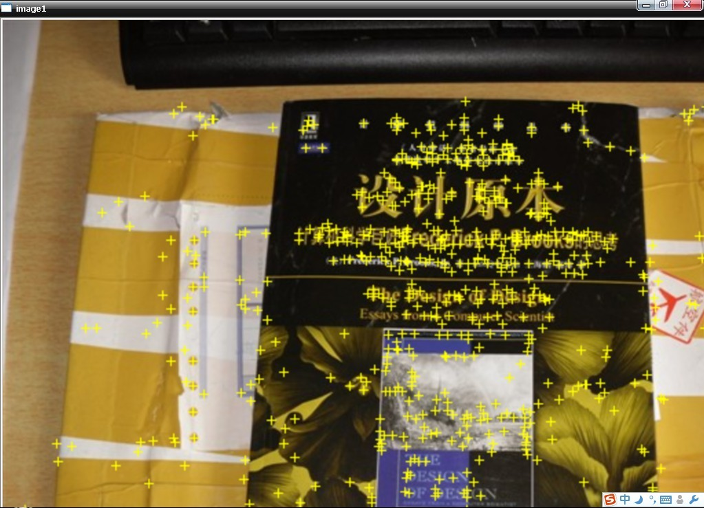
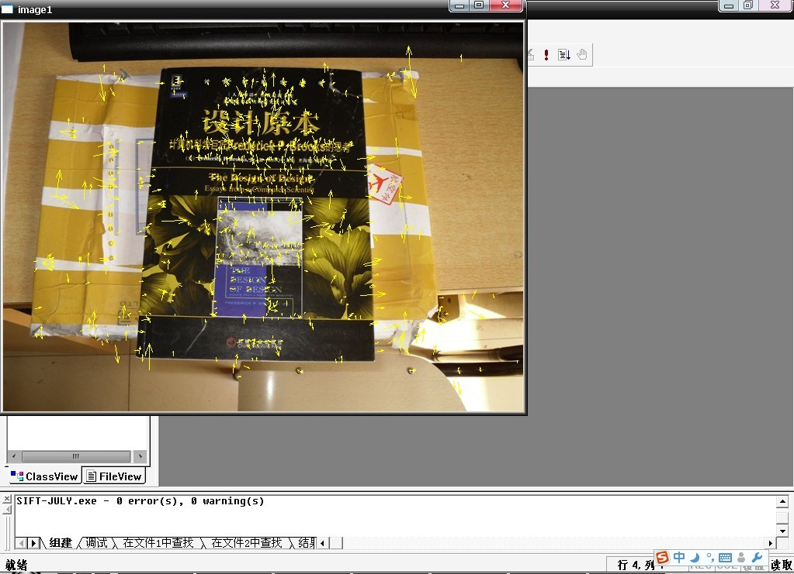
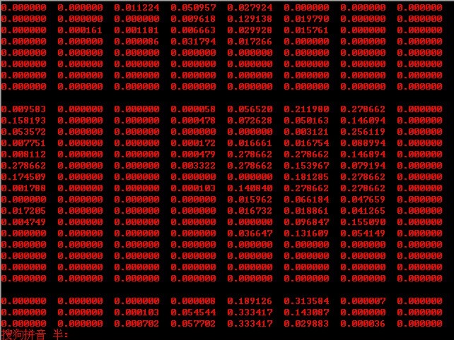
sift算法的步骤
要实现一个算法，首先要完全理解这个算法的原理或思想。咱们先来简单了解下，什么叫sift算法：
sift，尺度不变特征转换，是一种电脑视觉的算法用来侦测与描述影像中的局部性特征，它在空间尺度中寻找极值点，并提取出其位置、尺度、旋转不变量，此算法由 David Lowe 在1999年所发表，2004年完善总结。
所谓，Sift算法就是用不同尺度（标准差）的高斯函数对图像进行平滑，然后比较平滑后图像的差别，
差别大的像素就是特征明显的点。
以下是sift算法的五个步骤：
一、建立图像尺度空间(或高斯金字塔)，并检测极值点
首先建立尺度空间，要使得图像具有尺度空间不变形，就要建立尺度空间，sift算法采用了高斯函数来建立尺度空间，高斯函数公式为：
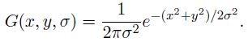
上述公式G(x,y,e)，即为尺度可变高斯函数。
而，一个图像的尺度空间L（x,y,e) ,定义为原始图像I(x,y)与上述的一个可变尺度的2维高斯函数G(x,y,e) 卷积运算。
即，原始影像I(x，y)在不同的尺度e下，与高斯函数G(x,y,e)进行卷积，得到L(x,y,e)，如下：
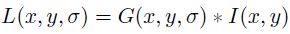
以上的（x，y）是空间坐标， e，是尺度坐标，或尺度空间因子，e的大小决定平滑程度，大尺度对应图像的概貌特征，小尺度对应图像的细节特征。大的e值对应粗糙尺度(低分辨率)，反之，对应精细尺度(高分辨率)。
尺度，受e这个参数控制的表示。而不同的L（x,y,e）就构成了尺度空间，具体计算的时候，即使连续的高斯函数，都被离散为（一般为奇数大小）(2*k+1) *(2*k+1)矩阵，来和数字图像进行卷积运算。
随着e的变化，建立起不同的尺度空间，或称之为建立起图像的高斯金字塔。
但，像上述L(x,y,e) = G(x,y,e)*I(x,y)的操作，在进行高斯卷积时，整个图像就要遍历所有的像素进行卷积(边界点除外)，于此，就造成了时间和空间上的很大浪费。
为了更有效的在尺度空间检测到稳定的关键点，也为了缩小时间和空间复杂度，对上述的操作作了一个改建：即，提出了高斯差分尺度空间（DOG scale-space）。利用不同尺度的高斯差分与原始图像I(x,y)相乘 ，卷积生成。
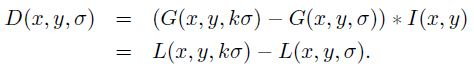
DOG算子计算简单，是尺度归一化的LOG算子的近似。
ok，耐心点，咱们再来总结一下上述内容：
高斯卷积
在组建一组尺度空间后，再组建下一组尺度空间，对上一组尺度空间的最后一幅图像进行二分之一采样，得到下一组尺度空间的第一幅图像，然后进行像建立第一组尺度空间那样的操作，得到第二组尺度空间，公式定义为L(x,y,e) = G(x,y,e)*I(x,y)
图像金字塔的构建：图像金字塔共O组，每组有S层，下一组的图像由上一组图像降采样得到，效果图，图A如下(左为上一组，右为下一组)：
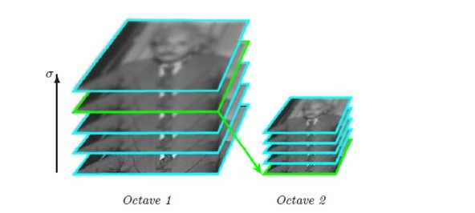
高斯差分
在尺度空间建立完毕后，为了能够找到稳定的关键点，采用高斯差分的方法来检测那些在局部位置的极值点，即采用俩个相邻的尺度中的图像相减，即公式定义为：
D(x,y,e) = ((G(x,y,ke) - G(x,y,e)) * I(x,y) = L(x,y,ke) - L(x,y,e)效果图，图B：
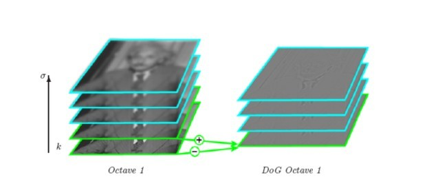
SIFT的精妙之处在于采用图像金字塔的方法解决这一问题，我们可以把两幅图像想象成是连续的，分别以它们作为底面作四棱锥，就像金字塔，那么每一个 截面与原图像相似，那么两个金字塔中必然会有包含大小一致的物体的无穷个截面，但应用只能是离散的，所以我们只能构造有限层，层数越多当然越好，但处理时 间会相应增加，层数太少不行，因为向下采样的截面中可能找不到尺寸大小一致的两个物体的图像。
咱们再来具体阐述下构造D(x,y,e)的详细步骤：
- 首先采用不同尺度因子的高斯核对图像进行卷积以得到图像的不同尺度空间，将这一组图像作为金子塔图像的第一层。
- 接着对第一层图像中的2倍尺度图像（相对于该层第一幅图像的2倍尺度）以2倍像素距离进行下采样来得到金子塔图像的第二层中的第一幅图像，对该图像采用不同尺度因子的高斯核进行卷积，以获得金字塔图像中第二层的一组图像。
- 再以金字塔图像中第二层中的2倍尺度图像（相对于该层第一幅图像的2倍尺度）以2倍像素距离进行下采样来得到金字塔图像的第三层中的第一幅图像，对该图像采用不同尺度因子的高斯核进行卷积，以获得金字塔图像中第三层的一组图像。这样依次类推，从而获得了金字塔图像的每一层中的一组图像，如下图所示：
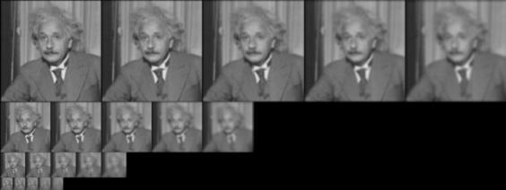 对上图得到的每一层相邻的高斯图像相减，就得到了高斯差分图像，如下述第一幅图所示。下述第二幅图中的右列显示了将每组中相邻图像相减所生成的高斯差分图像的结果，限于篇幅，图中只给出了第一层和第二层高斯差分图像的计算（下述俩幅图统称为图2）：
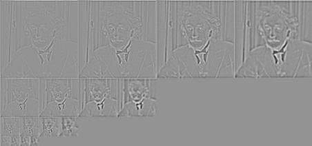
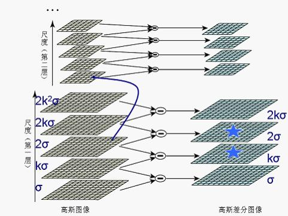
图像金字塔的建立：对于一幅图像I,建立其在不同尺度(scale)的图像，也成为子八度（octave），这是为了scale-invariant，也就是在任何尺度都能够有对应的特征点，第一个子八度的scale为原图大小，后面每个octave为上一个octave降采样的结果，即原图的1/4（长宽分别减半），构成下一个子八度（高一层金字塔）。
因为高斯差分函数是归一化的高斯拉普拉斯函数的近似，所以可以从高斯差分金字塔分层结构提取出图像中的极值点作为候选的特征点。对DOG 尺度空间每个点与相邻尺度和相邻位置的点逐个进行比较，得到的局部极值位置即为特征点所处的位置和对应的尺度。
二、检测关键点
为了寻找尺度空间的极值点，每一个采样点要和它所有的相邻点比较，看其是否比它的图像域和尺度域的相邻点大或者小。如下图，图3所示，中间的检测点和它同尺度的8个相邻点和上下相邻尺度对应的9×2个点共26个点比较，以确保在尺度空间和二维图像空间都检测到极值点。
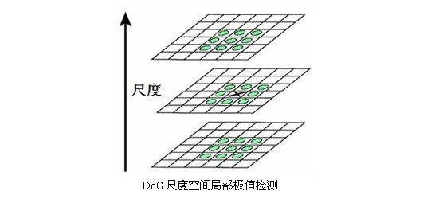
因为需要同相邻尺度进行比较，所以在一组高斯差分图像中只能检测到两个尺度的极值点（如上述第二幅图中右图的五角星标识），而其它尺度的极值点检测则需要在图像金字塔的上一层高斯差分图像中进行。依次类推，最终在图像金字塔中不同层的高斯差分图像中完成不同尺度极值的检测。
当然这样产生的极值点并不都是稳定的特征点，因为某些极值点响应较弱，而且DOG算子会产生较强的边缘响应。
三、关键点方向的分配
为了使描述符具有旋转不变性，需要利用图像的局部特征为给每一个关键点分配一个方向。利用关键点邻域像素的梯度及方向分布的特性，可以得到梯度模值和方向如下：
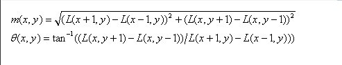
其中，尺度为每个关键点各自所在的尺度。
在以关键点为中心的邻域窗口内采样，并用直方图统计邻域像素的梯度方向。梯度直方图的范围是0～360度，其中每10度一个方向，总共36个方向。
直方图的峰值则代表了该关键点处邻域梯度的主方向，即作为该关键点的方向。
在计算方向直方图时，需要用一个参数等于关键点所在尺度1.5倍的高斯权重窗对方向直方图进行加权，上图中用蓝色的圆形表示，中心处的蓝色较重，表示权值最大，边缘处颜色潜，表示权值小。如下图所示，该示例中为了简化给出了8方向的方向直方图计算结果，实际sift创始人David Lowe的原论文中采用36方向的直方图。
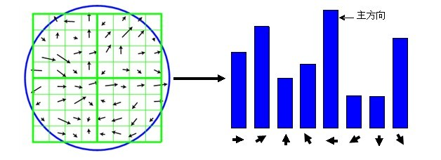
方向直方图的峰值则代表了该特征点处邻域梯度的方向，以直方图中最大值作为该关键点的主方向。为了增强匹配的鲁棒性，只保留峰值大于主方向峰值80％的方向作为该关键点的辅方向。因此，对于同一梯度值的多个峰值的关键点位置，在相同位置和尺度将会有多个关键点被创建但方向不同。仅有15％的关键点被赋予多个方向，但可以明显的提高关键点匹配的稳定性。
至此，图像的关键点已检测完毕，每个关键点有三个信息：位置、所处尺度、方向。由此可以确定一个SIFT特征区域。
四、特征点描述符
通过以上步骤，对于每一个关键点，拥有三个信息：位置、尺度以及方向。接下来就是为每个关键点建立一个描述符，使其不随各种变化而改变，比如光照变化、视角变化等等。并且描述符应该有较高的独特性，以便于提高特征点正确匹配的概率。
首先将坐标轴旋转为关键点的方向，以确保旋转不变性。
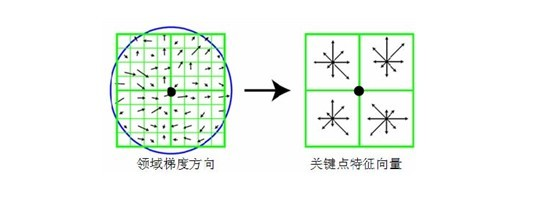
接下来以关键点为中心取8×8的窗口。
上图，图5中左部分的中央黑点为当前关键点的位置，每个小格代表关键点邻域所在尺度空间的一个像素，箭头方向代表该像素的梯度方向，箭头长度代表梯度模值，图中蓝色的圈代表高斯加权的范围（越靠近关键点的像素梯度方向信息贡献越大）。
然后在每4×4的小块上计算8个方向的梯度方向直方图，绘制每个梯度方向的累加值，即可形成一个种子点，如图5右部分所示。此图中一个关键点由2×2共4个种子点组成，每个种子点有8个方向向量信息。这种邻域方向性信息联合的思想增强了算法抗噪声的能力，同时对于含有定位误差的特征匹配也提供了较好的容错性。
实际计算过程中，为了增强匹配的稳健性，Lowe建议对每个关键点使用4×4共16个种子点来描述，这样对于一个关键点就可以产生128个数据，即最终形成128维的SIFT特征向量。此时SIFT特征向量已经去除了尺度变化、旋转等几何变形因素的影响，再继续将特征向量的长度归一化，则可以进一步去除光照变化的影响。
五、最后一步
当两幅图像的SIFT特征向量生成后，下一步我们采用关键点特征向量的欧式距离来作为两幅图像中关键点的相似性判定度量。取上图中，图像A中的某个关键点，并找出其与图像B中欧式距离最近的前两个关键点，在这两个关键点中，如果最近的距离除以次近的距离少于某个比例阈值，则接受这一对匹配点。降低这个比例阈值，SIFT匹配点数目会减少，但更加稳定。关于sift 算法的更多理论介绍请参看此文：http://blog.csdn.net/abcjennifer/article/details/7639681。
sift算法的逐步c实现
ok，上文搅了那么多的理论，如果你没有看懂它，咋办列?没关系，下面，咱们来一步一步实现此sift算法，即使你没有看到上述的理论，慢慢的，你也会明白sift算法到底是怎么一回事，sift算法到底是怎么实现的…。
yeah，请看：
前期工作：
在具体编写核心函数之前，得先做几个前期的准备工作：
- 头文件：
|
|
- 定义几个宏，及变量，以免下文函数中，突然冒出一个变量，而您却不知道怎么一回事：
|
|
- 然后，咱们还得，声明几个变量，以及建几个数据结构（数据结构是一切程序事物的基础麻，:D。）：
|
|
- 声明几个图像的基本处理函数：
|
|
算法核心
本程序中，sift算法被分为以下五个步骤及其相对应的函数（可能表述与上，或与前俩篇文章有所偏差，但都一个意思）：
|
|
主体实现
ok，以上所有的工作都就绪以后，那么接下来，咱们就先来编写main函数，因为你一看主函数之后，你就立马能发现sift算法的工作流程及其原理了。
（主函数中涉及到的函数，下一篇文章：一、教你一步一步用c语言实现sift算法、下，咱们自会一个一个编写）：
|
|
更多见下文：一、教你一步一步用c语言实现sift算法、下。本文完。